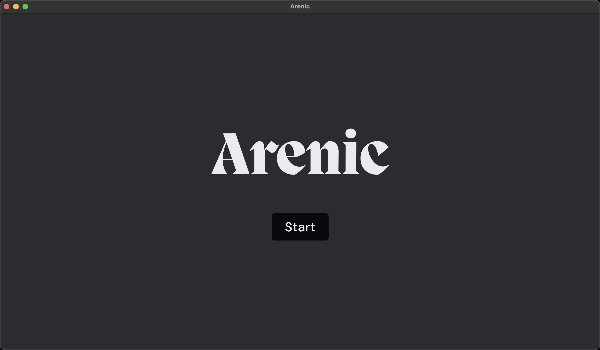
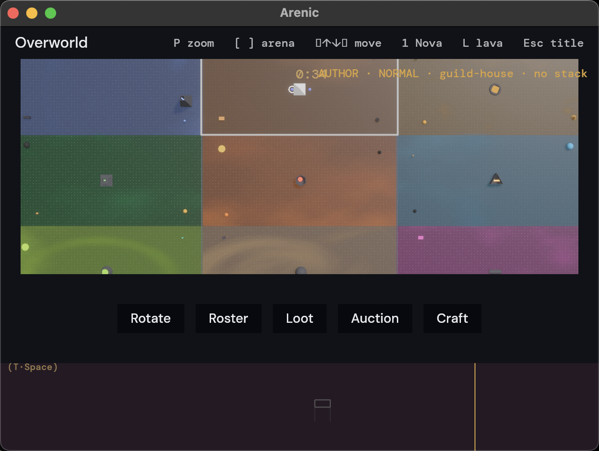
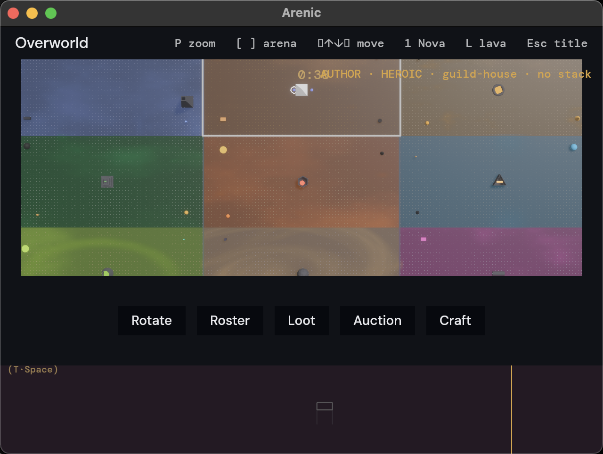
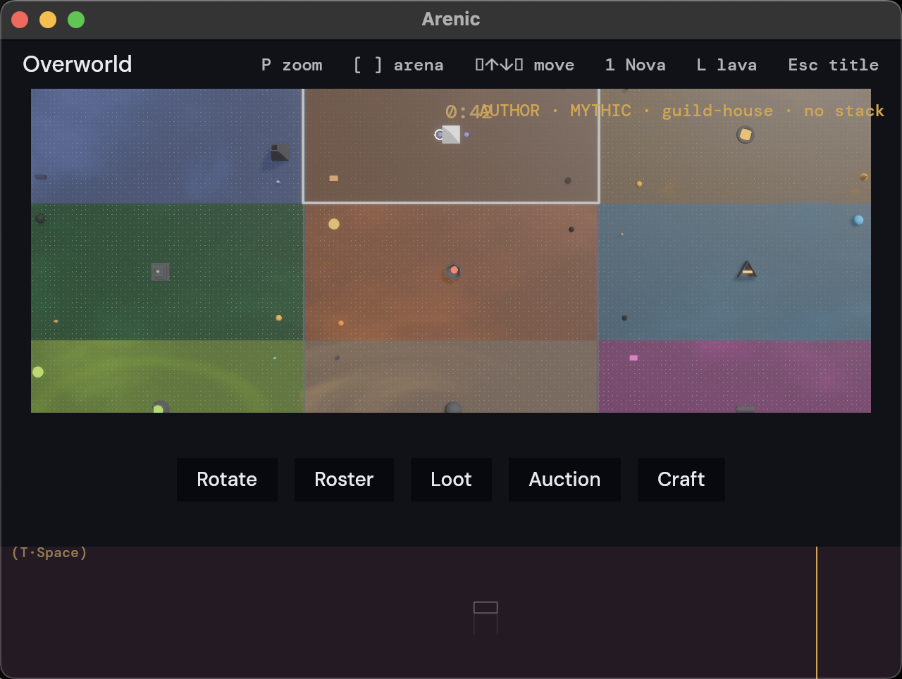
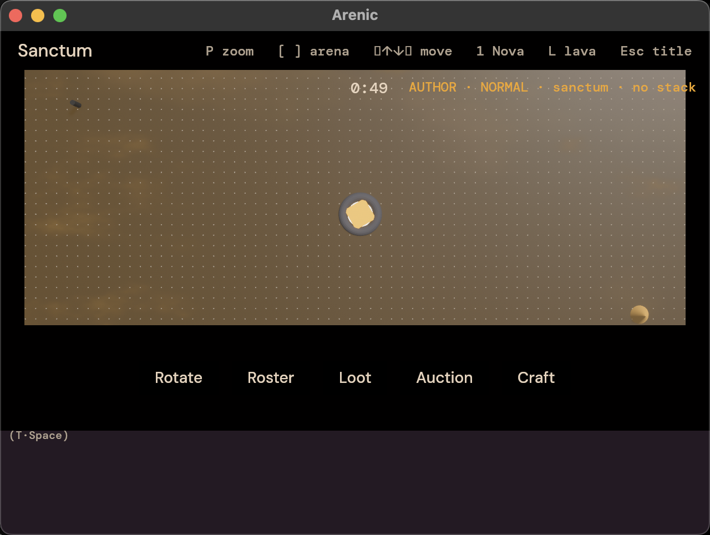
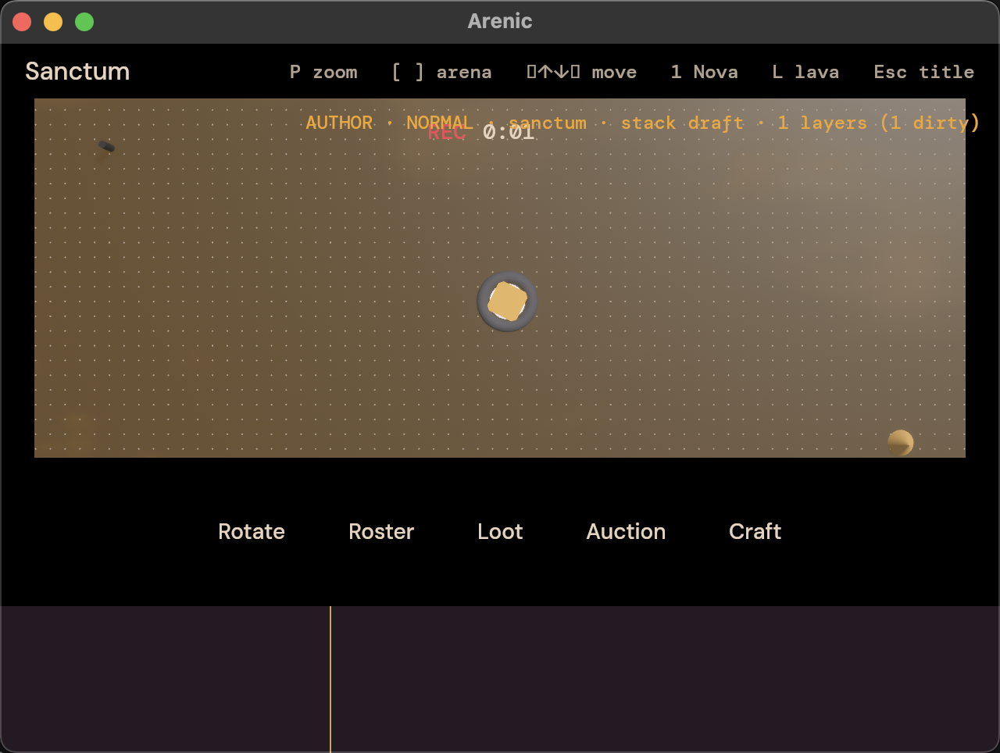
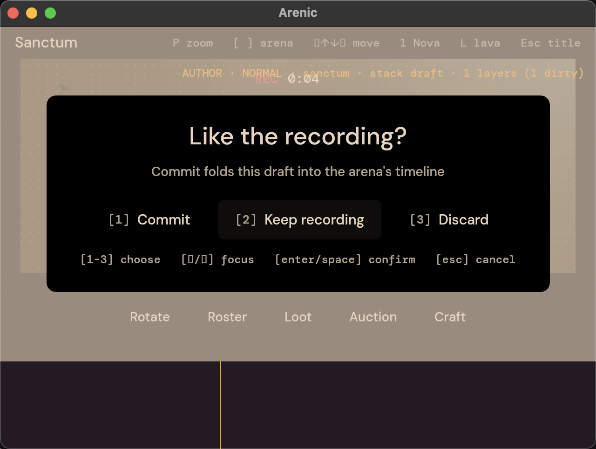
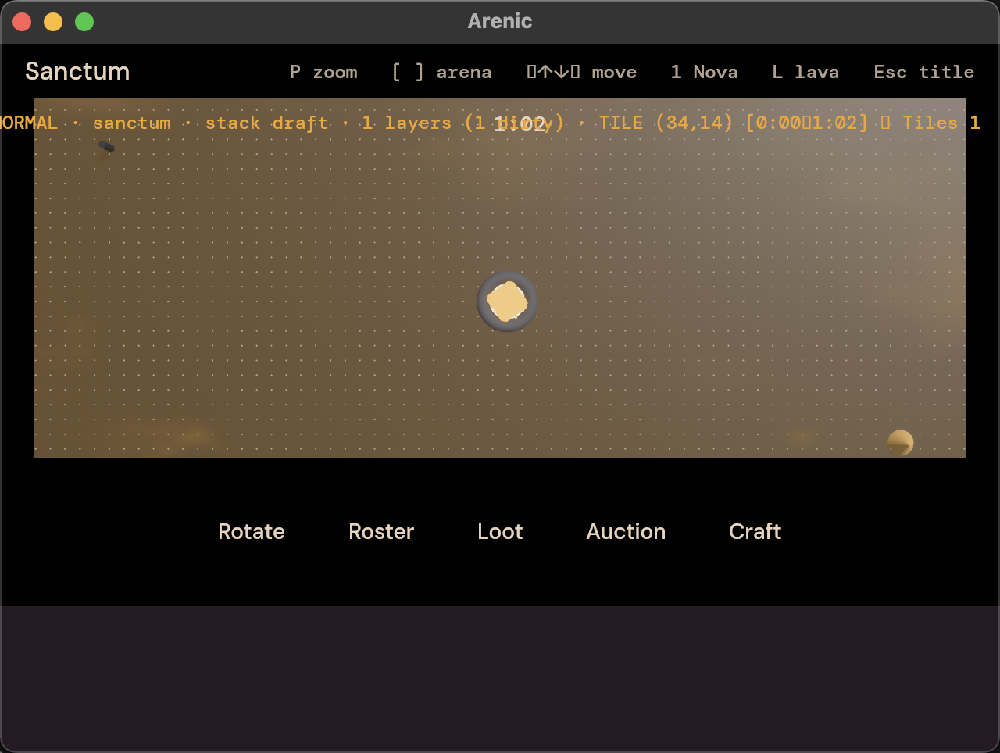
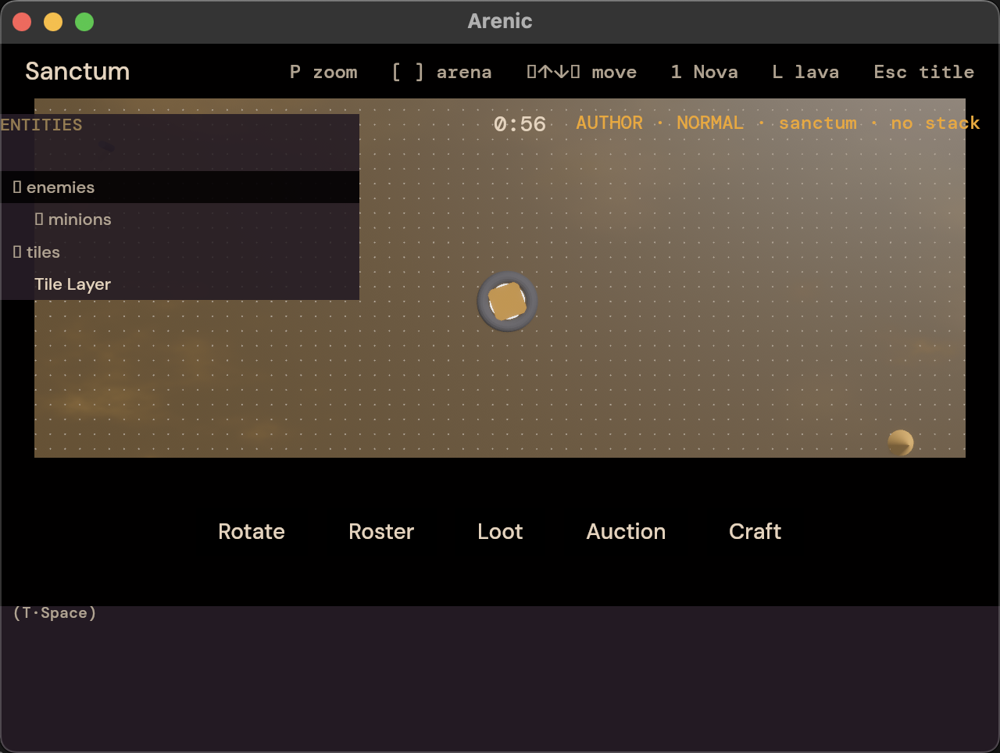
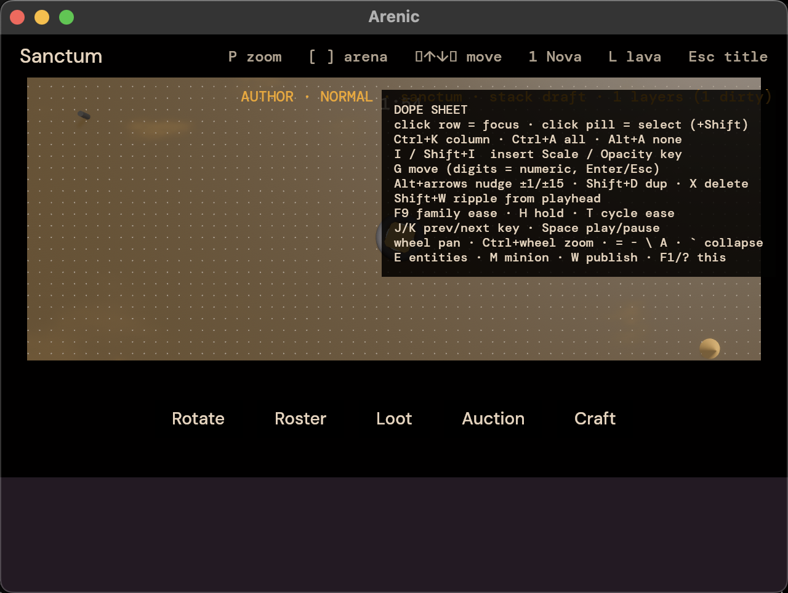

A practical onboarding guide for designers building Normal, Heroic, and Mythic boss encounters with the native authoring tool.

Author mode is a native-only build that layers encounter content on top of the normal game simulation. Each arena and difficulty owns a draft layer stack. Playback folds that stack into the normal two-minute, 60 Hz timeline.
layers.vNNNN.ron file, then restart/reload. Git history is the second level of undo.
just author. Do not use the web app for authoring; author systems are excluded from WASM builds.

| Input | Use |
|---|---|
| P | Toggle overworld and single-arena zoom. |
| [ / ] | Cycle focused arena. In zoomed view, the camera follows. |
| D | Cycle authoring difficulty: Normal -> Heroic -> Mythic. |
| B | Possess the focused arena's boss, then each minion layer, then return to puck control. |
| M | Add a token minion layer at the playhead. The entity browser is preferred for deliberate placement. |
| E | Open the entity browser. |
| T | Toggle tile editor mode. |
| W | Publish the focused arena's entire draft stack as the next layers.vNNNN.ron. |
| F5 | Restart the focused arena at tick 0 for a fresh watch-through. |
| F1 or ? | Toggle the in-app dope sheet binding overlay. |
| Input | Use |
|---|---|
| Arrow keys | Move the selected puck, boss, or minion one tile per press. During tile mode, arrows move the tile cursor instead. |
| 1-4 | Cast the selected entity's ability slot. For possessed bosses, slots resolve through the boss phase loadout. |
| R | Start a recording countdown, stop a recording early, or open the relevant recording modal. |
| Tab | Switch selected hero in normal world control. During tile mode, cycle tile layers. |
| Esc | Cancel modal / return to title when idle. |



Tile authoring is for floor hazards, safe windows, waves, and phase pressure. The editor writes tile keyframes into the selected tile layer of the draft stack.
| Input | Tile editor behavior |
|---|---|
| T | Open/close tile mode. The focused arena pauses while editing. |
| Arrow keys | Move the tile cursor one cell. |
| , / . | Scrub playhead back/forward one second. Hold Shift for ten seconds. |
| I / O | Set in/out marks for the keyframe range. |
| Space | Toggle a Lava keyframe for the cursor cell over the marked range. |
| N | Add a new tile layer on top of the stack and select it. |
| Tab | Cycle the paint target through existing tile layers. |

| Input | Use |
|---|---|
| E | Open/focus the browser. |
| Up / Down | Move focused row. |
| Right / Left | Expand/collapse directories or jump to parent. |
| Type | Filter by path substring. Backspace edits the filter. |
| Enter | Add focused palette entry at the playhead. |
| Esc | Close filter first, then browser. |

The dope sheet edits effect tracks on layers. It is also the fastest way to inspect row focus, playhead position, and the current key-editing bindings.
| Input | Use |
|---|---|
| Click row / pill | Focus layer row or select an effect key. Shift-click adds to selection. |
| Ctrl+K | Select keys at the playhead column. |
| Ctrl+A / Alt+A | Select all / clear selection. |
| I / Shift+I | Insert Scale / Opacity effect key at the playhead. |
| G | Move selected keys. Digits enter a numeric tick delta; Enter commits; Esc cancels. |
| Alt+Left/Right | Nudge selected keys by one tick; add Shift for 15 ticks. |
| Shift+D | Duplicate selected keys into move mode. |
| X / Delete | Delete selected keys. |
| Shift+W | Ripple keys at or after the playhead. |
| F9 family / H / T | Set ease-in-out, hold, or cycle the selected key's ease. |
| J / K | Jump playhead to previous/next key. |
| Wheel / Ctrl+Wheel | Pan / zoom the timeline. |
| =, -, \, A, ` | Zoom in/out, toggle full cycle, frame all, collapse panel. |

Each assigned boss should receive a Normal, Heroic, and Mythic pass. Because final abilities are incomplete, focus on readable timing, repeatable movement, tile pressure, and layer structure.
assets/encounters/<arena>/<difficulty>/layers.vNNNN.ron.| Symptom | Fix |
|---|---|
| Author HUD missing | Use just author. The web app and normal game build intentionally exclude author mode. |
| D will not switch difficulty | You have dirty draft edits. Publish with W or quit/reopen if the draft should be discarded. |
| Published the wrong take | Delete the newest layers.vNNNN.ron in that arena/difficulty directory, then restart/reload. Do not hand-edit another difficulty's folder. |
| Ability slot does nothing | Expected for unfinished abilities. Record the timing anyway only if the future slot needs that timestamp. |
| Modal blocking inputs | Use 1-9, focus arrows/Tab, Enter/Space, or Esc. World input is gated while modals are open. |
| Tile layer conflicts look wrong | Remember top layer wins. Put overrides above broad base patterns. |